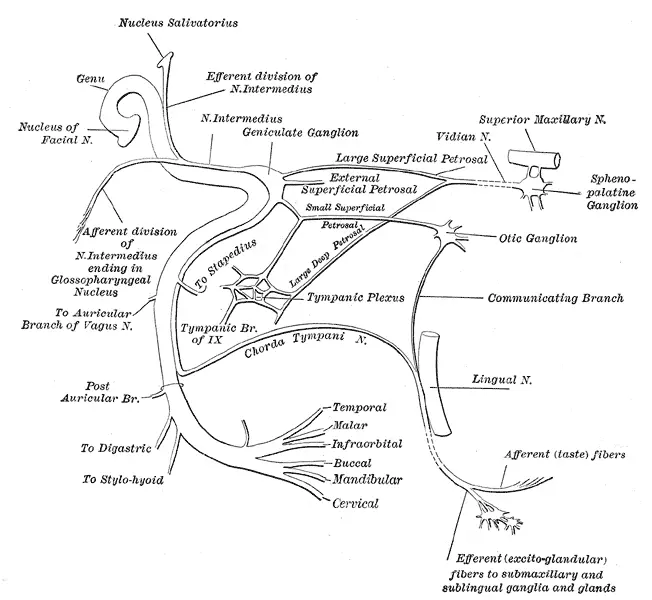

DX.1 — Paralysie faciale idiopathique de Bell
La paralysie de Bell est la plus fréquente des paralysies faciales périphériques, mais elle ne se retient qu'après avoir écarté les autres causesS1S3. Le médecin vérifie d'abord que le front est atteint, puis il cherche les atypies : un début brutal, un autre déficit, des vésicules, une masseS1S3. Il débute ensuite les corticoïdes dans les 72 heures et protège la cornée le jour mêmeS1S3. Il cote enfin la sévérité, car elle décide de l'antiviral, de l'électroneuromyographie et du suiviS1.
1. Définition
La Société française d'oto-rhino-laryngologie (SFORL) définit en 2020 la paralysie faciale idiopathique comme une paralysie faciale périphérique d'installation brutale, qui se complète en 24 ou 48 heuresS3. Elle touche les territoires supérieur et inférieur d'une hémiface, et elle atteint ensemble les motricités volontaire, automatique et émotionnelleS3. Le protocole des Hôpitaux universitaires de Genève (HUG) de 2023 retient la même forme, unilatérale, installée de façon rapidement progressive en 12 à 72 heuresS1. Aucune cause n'est retrouvée après l'examen et le bilan : le diagnostic reste donc un diagnostic d'élimination, que le médecin ne pose jamais sur la seule déviation de la boucheS3S4.
2. Épidémiologie (Suisse, puis Europe)
La Revue Médicale Suisse estime l'incidence de la paralysie faciale périphérique à environ 0,5 pour 1000, et la forme idiopathique en explique 50 à 70 %S2. Les HUG reprennent cette proportion dans leur protocole d'urgenceS1. Les chiffres et les terrains à risque montrent une maladie de l'adulte, plus rare chez l'enfant, chez qui la maladie de Lyme domineS2. L'histoire naturelle est favorable dans la majorité des cas, mais la paralysie totale laisse des séquelles chez une partie des patientsS2S4.
3. Physiopathologie
Le nerf facial parcourt un long canal osseux dans le rocher, où il ne peut pas gonfler sans se comprimer. La base anatomique explique chaque signe : un nerf, quatre fonctions, trois segments intrapétreuxS2S4. Une inflammation œdémateuse, peut-être virale, comprime le nerf dans ce canal et bloque d'abord la conductionS2S4. La chaîne lésionnelle va ensuite du simple bloc réversible à la dégénérescence de l'axone, et cette profondeur décide du pronosticS2. Le tableau de corrélation associe à chaque perturbation l'examen qui la démontre, puis le geste qui la corrige.
4. Démarche diagnostique
Le médecin répond à trois questions dans l'ordre : le déficit est-il périphérique, le tableau est-il typique, et l'œil est-il protégé ? Un début brutal ou un autre déficit neurologique font d'abord chercher l'accident vasculaire cérébral, traité dans DX.2S1. Les diagnostics à écarter sont ensuite le zona otique, la neuroborréliose et la tumeur, car chacun change le traitementS1S3. Les atypies suffisent à remettre le diagnostic en cause, même lorsque la paralysie paraît banaleS3.
5. Anamnèse ciblée et drapeaux rouges
L'interrogatoire date le début à l'heure près, puis il caractérise la vitesse d'installation et la douleur derrière l'oreilleS1S3. Il précise ensuite le goût, l'intolérance aux sons, l'œil et l'engourdissement de la joue, qui situent la lésionS1S3. Il recherche ensuite le terrain et les expositions : grossesse, diabète, tiques, comportements à risque et épisodes antérieursS1S3. Les drapeaux rouges imposent chacun une action précise le jour même.
6. Examen physique ciblé, région par région
L'examen suit l'ordre où les signes se montrent chez un patient assis face au médecin. Celui-ci observe d'abord le visage au repos, puis il teste le front, l'œil et la bouche et le cou. Il examine ensuite l'oreille et palpe la parotide et le cou, car ces deux régions démasquent les causes localesS1S3. Il termine par les autres nerfs crâniens et les voies longues, puis il cote la sévérité dans le dossierS1S3.
7. Approche syndromique
Quatre syndromes résument le tableau. Le syndrome moteur périphérique (7.1) permet le diagnostic, et le syndrome du nerf intermédiaire (7.2) situe la lésion dans le rocherS3S4. Le syndrome d'exposition cornéenne (7.3) porte le risque immédiat, alors que le syndrome séquellaire (7.4) apparaît pendant la repousse du nerfS2S4.
8. Diagnostic positif et critères
Le diagnostic est clinique : aucun marqueur sanguin et aucune image ne le prouvent. Les critères de la SFORL exigent un déficit périphérique, une installation courte et un examen normal par ailleursS3. Le médecin distingue ainsi ce qui suffit de ce qui ne suffit pas, puis il classe la sévérité selon l'échelle de House-Brackmann, qui commande l'antiviral et le suiviS1.
9. Examens complémentaires
9.a Aucun examen ne constitue un étalon : la référence reste l'examen clinique, complété par l'exclusion des causesS3.
9.b En première intention, le médecin prescrit la glycémie, les sérologies et, selon la SFORL, l'hémogrammeS1S3.
9.c Les alternatives concernent l'enfant, la grossesse et l'imagerie par résonance magnétique (IRM) impossibleS2S3.
9.d En deuxième intention viennent l'IRM, l'électroneuromyographie, l'audiométrie avec réflexe stapédien et la ponction lombaireS1S3. Le tableau d'interprétation indique la conduite pour chaque résultat.
10. Arbre décisionnel
- Si le début est brutal ou si un autre déficit neurologique existe, le médecin active la filière de l'accident vasculaire cérébral avant tout autre gesteS1.
- Si le front est épargné, la paralysie est centrale : une imagerie cérébrale s'impose alors dans tous les casS4.
- Si toute l'hémiface est atteinte, il examine l'oreille : des vésicules signent le zona otique et imposent l'antiviral, traité dans DX.3S1.
- Si une masse parotidienne, une surdité, des vertiges ou une atteinte bilatérale existent, il quitte le diagnostic de Bell et demande l'imagerie et l'avis spécialiséS3.
- Si l'exposition aux tiques ou un érythème migrant sont retrouvés, il demande la sérologie de Lyme et discute la ponction lombaireS1S4.
- Si le tableau est isolé et typique, il retient la paralysie de Bell, cote la sévérité et débute la corticothérapie dans les 72 heuresS3.
- Si la fermeture de l'œil est incomplète, il prescrit le jour même les larmes, la pommade et l'occlusion nocturneS1.
- Si le grade atteint IV à VI, il ajoute l'antiviral selon les HUG et organise la consultation de neurologie vers le dixième jourS1.
- Si aucune récupération ne débute après un mois, il remet le diagnostic en cause et demande l'IRM de tout le trajet du nerfS3.
11. Prise en charge selon les recommandations suisses
11.A But. Le traitement vise une récupération complète, soit le grade I de House-Brackmann, et aucune lésion de la cornéeS2. Le médecin débute pour cela les corticoïdes dans les 72 premières heuresS3.
11.B Moyens. La fenêtre Urgence — conduite chronologique ordonne les gestes des premières heures aux premiers mois. Le choix et l'ordre des traitements placent la prednisone ou la prednisolone en premier, et le valaciclovir seulement dans les formes sévèresS1S3. La protection de l'œil associe un gel de carbomère le jour et la pommade à la vitamine A la nuitS1. La rééducation et les traitements non recommandés complètent le plan, avec les situations spéciales et le volet socialS3.
11.C Surveillance. Le calendrier de suivi fixe trois rendez-vous : la première semaine, le dixième jour pour les formes sévères, puis le sixième moisS1S2.
11.D Pronostic et sortie. Le pronostic dépend de la sévérité initiale et de l'électroneuromyographieS2S3. Les critères de retour à domicile sont vérifiés un par un avant le départ du patient.
12. Prévention
Aucune des recommandations suisses et européennes ne décrit de mesure qui prévienne la survenue même de la paralysie de Bell. La prévention secondaire repose sur la consultation rapide et sur le dépistage du diabète au moment du diagnosticS3. La prévention tertiaire protège la cornée et limite les syncinésies par une rééducation douceS2S3.
13. Points clés
La paralysie de Bell atteint toute une hémiface, front compris, et elle s'installe en moins de 72 heuresS1.
Elle reste un diagnostic d'élimination, car environ 10 % des paralysies d'allure idiopathique révèlent une tumeurS4.
Un début brutal ou un autre déficit neurologique imposent d'abord la recherche d'un accident vasculaire cérébralS1.
La corticothérapie orale doit débuter dans les 72 premières heures, et l'antiviral prescrit seul reste déconseilléS3.
L'œil qui ne ferme pas reçoit le jour même des larmes, une pommade et une occlusion nocturneS1.
Une paralysie totale justifie une électroneuromyographie vers le dixième jour et un contrôle à six moisS2.
14. Pièges et questions fréquentes à l'examen fédéral suisse
| Question | Bonne réponse | Raison |
|---|---|---|
| Un patient ne peut plus plisser le front d'un côté : la lésion est-elle forcément dans le nerf ? | Non, elle peut siéger dans le pont. | Une lésion strictement nucléaire imite la forme idiopathique ; l'examen des voies longues tranche (point 6)S3. |
| La paralysie s'aggrave encore au cinquième jour : le diagnostic de Bell tient-il ? | Non, il doit être remis en cause. | Une aggravation au-delà de 72 heures fait chercher une tumeur (point 4)S3. |
| Faut-il prescrire un antiviral seul lorsque le patient refuse les corticoïdes ? | Non. | L'antiviral seul ne modifie pas le pronostic ; la recommandation est de grade A (point 11)S3. |
| Quel traitement les HUG prescrivent-ils dans la forme idiopathique de grade II ? | La prednisone seule, avec la protection oculaire. | L'antiviral est réservé aux grades IV à VI ou aux arguments pour un zona (point 11)S1. |
| Une IRM de diffusion normale aux urgences exclut-elle une tumeur du nerf facial ? | Non. | La séquence de diffusion cherche l'infarctus et n'explore pas le trajet du nerf (point 9)S3. |
| Quand l'électroneuromyographie pronostique doit-elle être réalisée ? | Entre le neuvième et le vingtième jour, dans les formes sévères. | Avant le huitième jour, la dégénérescence n'est pas constituée et le résultat trompe (point 9)S3. |
| Le patient mâche du chewing-gum pour « muscler » son visage : est-ce utile ? | Non, c'est contre-indiqué. | Le travail en force et l'électrothérapie favorisent les spasmes et les syncinésies (point 11)S3. |
| Le réflexe stapédien persiste malgré une paralysie complète : que faut-il en conclure ? | La lésion siège hors du rocher. | Il faut chercher une lésion parotidienne ou cervicale (point 9)S3. |
| L'œil est rouge et douloureux au huitième jour : peut-on attendre le contrôle prévu ? | Non, l'avis ophtalmologique est urgent. | La kératite d'exposition menace la cornée (point 5)S1. |
| L'information professionnelle suisse de la prednisone mentionne-t-elle la paralysie de Bell ? | Non. | La prescription suit le protocole des HUG, hors indication enregistrée (point 11)S1S7. |
Sources
Toutes les sources ont été consultées le 11.11.2026 (Europe/Zurich).
- S1 Hôpitaux universitaires de Genève (HUG), Service des urgences. Paralysie faciale périphérique : protocole médical, version 1.2, mise à jour du 04.04.2023 (Rossel A, Lebowitz D, Spechbach H). https://www.hug.ch/sites/interhug/files/2023-04/paralysie_faciale_peripherique_avril_2023_1.pdf
- S2 Maire R, Meylan P (Centre hospitalier universitaire vaudois et Université de Lausanne). Paralysie faciale : mise à jour pour le praticien. Revue Médicale Suisse 2011;7:1901-7. https://www.revmed.ch/revue-medicale-suisse/2011/revue-medicale-suisse-311/paralysie-faciale-mise-a-jour-pour-le-praticien
- S3 Société française d'oto-rhino-laryngologie et de chirurgie de la face et du cou (SFORL). Recommandation pour la pratique clinique : prise en charge de la paralysie faciale idiopathique à la phase aiguë chez l'adulte, 2020 (recommandations 1 à 25). https://www.sforl.org/wp-content/uploads/2020/07/Recommandation-SFORL-Prise-en-charge-de-la-Paralysie-Faciale-Idiopathique-%C3%A0-la-phase-aigu%C3%AB-chez-l-adulte-2020.pdf
- S4 Collège des enseignants de neurologie. Référentiel du deuxième cycle, chapitre 12, item 101 : paralysie faciale (version en ligne). https://www.cen-neurologie.fr/second-cycle/i-connaissances/chapitre-12-item-101-paralysie-faciale
- S5 Heckmann JG, Urban PP, Pitz S, Guntinas-Lichius O, Gágyor I. The Diagnosis and Treatment of Idiopathic Facial Paresis (Bell's Palsy), revue fondée sur la recommandation allemande de neurologie (résumé). Deutsches Ärzteblatt International 2019;116(41):692-702. PMID 31709978. https://doi.org/10.3238/arztebl.2019.0692
- S6 Sidorov S, Greiter BM, Osuna E, et al. (Hôpital pédiatrique universitaire de Zurich). Distinct Clinico-pathogenic Subgroups in Pediatric Lyme Neuroborreliosis (résumé). Open Forum Infectious Diseases 2026;13(2):ofaf812. PMID 41648077. https://doi.org/10.1093/ofid/ofaf812
- [S7] Swissmedic, information professionnelle (AIPS) Prednisone Streuli® (prednisone), n° 29349, Streuli Pharma SA, mise à jour juin 2026. https://files.refdata.ch/simis-public-prod/MedicinalDocuments/20fd4e0534634d9a939cba4c8509130b-fr.html
- [S8] Swissmedic, information professionnelle (AIPS) Spiricort® (prednisolone), n° 38840, Spirig HealthCare SA, mise à jour juin 2026. https://files.refdata.ch/simis-public-prod/MedicinalDocuments/a16cd4d36b564816839b422425930530-fr.html
- [S9] Swissmedic, information professionnelle (AIPS) Valtrex® (valaciclovir), n° 53116, GlaxoSmithKline SA, mise à jour décembre 2025. https://files.refdata.ch/simis-public-prod/MedicinalDocuments/d1180e977490458dabfb3c4e73cc1719-fr.html
- [S10] Swissmedic, information professionnelle (AIPS) Vitamin A « Blache », pommade ophtalmique (palmitate de rétinol), n° 22398, mise à jour février 2023. https://files.refdata.ch/simis-public-prod/MedicinalDocuments/640920608d9047099fb95ce6d5a1b673-fr.html
- [S11] Swissmedic, information professionnelle (AIPS) Viscotears® / Viscotears® SDU (carbomère), n° 48624, Bausch & Lomb Swiss SA, mise à jour avril 2026. https://files.refdata.ch/simis-public-prod/MedicinalDocuments/9f7ffb97db5e479782497c85c6e17cae-fr.html
Contenu établi à partir des sources citées ; non validé cliniquement par un médecin.
Qui est touché : Suisse, puis Europe
| Chiffre | Population | Année | Source |
|---|---|---|---|
| L'incidence est d'environ 0,5 pour 1000. | Elle concerne toutes les paralysies faciales périphériques. | 2011 | Revue Médicale SuisseS2 |
| La forme idiopathique représente 50 à 70 % des cas. | Ce sont les paralysies périphériques vues aux urgences. | 2023 | Protocole des HUGS1 |
| Elle représente 60 à 75 % des cas. | La revue allemande reprend la recommandation des neurologues. | 2019 | Deutsches ÄrzteblattS5 |
| Un diabète est présent chez 10 % des patients. | Il s'agit d'adultes atteints de la forme idiopathique. | 2020 | SFORLS3 |
| La récidive concerne 6 % des formes idiopathiques. | Ce sont des adultes suivis en oto-rhino-laryngologie. | 2020 | SFORLS3 |
| La paralysie faciale touche 71,6 % des enfants atteints de neuroborréliose. | La cohorte zurichoise compte 190 enfants, de 2006 à 2020. | 2026 | Hôpital pédiatrique de ZurichS6 |
La SFORL retient comme facteurs de risque la grossesse, la prééclampsie, l'obésité, l'hypertension artérielle, le diabète et l'insuffisance respiratoireS3. Ces terrains comptent deux fois, car ils compliquent aussi la corticothérapie. La paralysie faciale est plus fréquente chez l'adulte que chez l'enfantS2. Chez l'enfant, la maladie de Lyme et le zona géniculé semblent les causes les plus courantes, ce qui interdit de conclure d'emblée à une forme idiopathiqueS2. L'enjeu de santé publique tient aux séquelles : le visage porte la communication non verbale, et sa paralysie pèse sur la vie sociale et psychiqueS2.
Histoire naturelle chez l'individu
La paralysie atteint son maximum en quelques heures à trois joursS1. La récupération débute 8 à 15 jours après le début, et la guérison survient généralement en moins de 2 moisS4. Lorsque la paralysie reste partielle à une semaine, la récupération est complète en trois à cinq semainesS2. Lorsque la paralysie est totale, la récupération complète n'est observée que dans 61 % des formes idiopathiquesS2. Selon le collège français des enseignants de neurologie, 5 à 10 % des récupérations restent incomplètes et laissent des séquellesS4. La maladie ne menace pas la vie ; elle menace la cornée pendant la phase flasque, puis la mimique lorsque le nerf repousse malS2S3.
Base à connaître : un nerf, quatre fonctions, trois segments
Le nerf facial réunit une racine motrice, le VII, et une racine sensitive, sensorielle et sécrétoire, le nerf intermédiaireS2S4. Les fibres motrices commandent les muscles peauciers de la face et du cou, ainsi que le muscle stapédien de l'oreille moyenneS4. Les fibres sécrétoires gagnent la glande lacrymale par le nerf grand pétreux, et les glandes salivaires par la corde du tympanS2S4. Les fibres gustatives recueillent le goût des deux tiers antérieurs de la langue par la corde du tympanS2. Les fibres sensitives innervent la conque et le fond du conduit auditif externe, que l'on nomme zone de Ramsay-HuntS2.
Dans le rocher, le nerf suit trois segments : labyrinthique, tympanique puis mastoïdien, jusqu'au trou stylo-mastoïdienS2. Il traverse ensuite la parotide et s'y divise en deux branches, temporo-faciale et cervico-facialeS2. Le front reçoit une commande des deux hémisphères : une lésion centrale l'épargne donc, alors qu'une lésion du noyau ou du nerf le paralyseS2S4.
Le trajet du nerf facial explique chaque signe associé. Schéma anatomique de Gray, légendé en anglais : le nerf est déroulé du noyau jusqu’aux branches de la face

Lisez d'abord seul ce cliché (le trajet du nerf facial explique chaque signe associé) : cherchez vous-même le signe.
La copie annotée (le trajet du nerf facial explique chaque signe associé) numérote les repères décrits ci-dessous.
- 1. Le ganglion géniculé contient les neurones du goût ; le nerf grand pétreux en part vers la glande lacrymaleS2.
- 2. Le rameau du muscle stapédien est issu du nerf dans le rocher : sa paralysie rend les sons forts douloureuxS2.
- 3. La corde du tympan rejoint le nerf lingual : elle porte le goût et la sécrétion salivaireS2.
- 4. Les branches terminales se séparent dans la parotide : une tumeur de la glande n’en lèse parfois qu’uneS2.
- Le schéma ne montre pas le canal osseux : c’est pourtant lui qui transforme un œdème en compression.
- Les légendes sont en anglais : « chorda tympani » désigne la corde du tympan, « geniculate ganglion » le ganglion géniculé.
Ce que l'image décide. Le médecin cherche le goût, l’hyperacousie et la sécheresse de l’œil pour situer la lésion dans le rocher.

Du bloc de conduction à la dégénérescence
Amorce. Le virus herpès simplex de type 1 reste latent dans le ganglion géniculé, où son ADN a été trouvé chez une majorité de sujets autopsiésS2. Sa réactivation pourrait déclencher l'inflammation, mais ce rôle reste débattu, car les preuves sérologiques manquent dans la plupart des casS2.
Développement. Le nerf enflammé gonfle dans son canal osseux inextensible : il subit alors une neuropathie œdémateuse et compressiveS4. La myéline souffre la première, et l'influx se bloque sans que l'axone soit rompu.
Installation. Ce bloc s'appelle neurapraxie ; il est réversible en moins de six semaines, parce que les axones restent viables en avalS2. Si la compression dure, l'axone s'interrompt : c'est l'axonotmésis, et le nerf devient inexcitable en sept à dix joursS2. Les gaines de soutien restent pourtant intactes, de sorte que l'axone repousse dans son tube d'environ 1 mm par jourS2.
Maintien. Dans la neurotmésis, les tubes de soutien sont eux-mêmes détruitsS2. Les axones repoussent alors au hasard et se trompent de muscle ou de glande ; ces fausses routes produisent les syncinésies, les contractures et le déficit lacrymalS2.
Cette chaîne justifie deux décisions. D'une part, les corticoïdes se donnent tôt, tant que l'œdème n'a pas rompu l'axoneS3. D'autre part, l'électroneuromyographie attend le neuvième jour, car la dégénérescence doit être constituée pour être mesuréeS3.
Perturbation, exploration, thérapeutique
| Perturbation | Exploration qui la montre | Thérapeutique et mécanisme |
|---|---|---|
| L'œdème comprime le nerf dans le canal du rocher. | L'IRM avec gadolinium montre un rehaussement du nerf, caractéristique mais non spécifiqueS3. | Le corticoïde réduit l'œdème inflammatoire et lève la compressionS3. |
| Le bloc de conduction interrompt l'influx sans rompre l'axone. | L'électroneuromyographie mesure une amplitude motrice conservée au-delà de 30 % du côté sainS3. | Aucun geste ne s'ajoute, car la récupération est spontanée et complèteS2. |
| La dégénérescence axonale dénerve les muscles. | L'amplitude motrice chute sous 10 % et des activités spontanées apparaissentS3. | La rééducation douce guide la repousse et limite les fausses routesS3. |
| L'orbiculaire paralysé ne ferme plus la paupière. | L'inspection montre la lagophtalmie et le signe de Charles BellS4. | Les larmes artificielles et l'occlusion nocturne remplacent le clignementS1. |
| Le muscle stapédien paralysé n'amortit plus les sons forts. | La tympanométrie montre l'abolition du réflexe stapédienS3. | Le symptôme disparaît avec la récupération du nerf, sans traitement propreS3. |
| La corde du tympan ne transmet plus le goût. | L'examen teste le goût des deux tiers antérieurs de l'hémilangueS4. | Aucun traitement n'est nécessaire ; le signe situe la lésion dans le rocherS4. |
Diagnostics différentiels : ce qui tranche
Les diagnostics graves de la situation de départ passent en premier : l'angioœdème facial (E1) et l'accident vasculaire cérébral (E2). La part non idiopathique atteint 25 à 40 % des paralysies faciales, ce qui donne tout son poids au diagnostic différentielS5.
| Diagnostic | Élément qui tranche | Piège | Conduite si positif |
|---|---|---|---|
| 🚩 Accident vasculaire cérébral (DX.2) | Le front est épargné, ou un déficit d'un membre accompagne la paralysieS4. | Un infarctus du pont paralyse toute l'hémiface, avec une hémiplégie du côté opposéS4. | Le médecin active la filière neurovasculaire et demande l'imagerie cérébrale. |
| Zona otique (DX.3) | Des vésicules siègent dans la conque ou le conduit auditif externeS1. | L'éruption peut suivre la paralysie, voire manquer complètementS2. | L'antiviral devient systématique, associé au corticoïdeS1. |
| Neuroborréliose (DX.4) | Une piqûre de tique, un érythème migrant ou une atteinte bilatérale oriententS1. | Le tableau peut se limiter à une paralysie d'allure idiopathiqueS3. | La sérologie est demandée et l'étude du liquide cérébrospinal est discutéeS4. |
| 🚩 Tumeur parotidienne (DX.8) | Une masse est palpée, ou la paralysie est segmentaire, lente ou récidivanteS2. | Une installation rapide n'exclut pas la tumeurS3. | L'IRM explore tout le trajet du nerf, parotide compriseS3. |
| Otite, mastoïdite ou cholestéatome | L'otoscopie montre un tympan anormal ou un écoulementS1. | L'otoscopie est oubliée lorsque la paralysie paraît typique. | Le patient est adressé au spécialiste de l'oreilleS2. |
| Syndrome de Guillain-Barré, sarcoïdose, infection par le VIH | La paralysie est bilatérale ou s'accompagne d'un autre déficitS1. | La diplégie faciale donne un visage symétrique, qui trompe l'œilS4. | Le neurologue est appelé ; la ponction lombaire et les sérologies sont discutéesS1. |
Les atypies qui font quitter le diagnostic de Bell
La SFORL remet le diagnostic en cause devant une paralysie qui s'aggrave au-delà de 72 heures, qui fluctue, qui récidive ou qui devient bilatéraleS3. Elle le remet aussi en cause, même après une installation rapide, devant une otoscopie anormale, une masse parotidienne ou ganglionnaire, une surdité du même côté ou des vertigesS3. Les HUG ajoutent le spasme facial, l'atteinte de plusieurs nerfs crâniens et l'évolution chronique, qui suggèrent une cause infectieuse, inflammatoire ou tumoraleS1. Des céphalées franches sont également anormales, alors qu'une douleur derrière la mastoïde reste compatibleS1.
L'erreur classique du débutant consiste à s'arrêter au front paralysé. Le raisonnement correct comporte trois étapes : le siège périphérique, puis l'absence d'atypie, puis l'évolution conforme. Ainsi, une paralysie d'allure banale sans début de récupération après un mois impose l'IRMS3. De fait, 8 à 12 % des paralysies d'allure idiopathique répondent à une tumeur, dont plus de 30 % sont malignesS3.
Symptôme : la vitesse d'installation
Le patient découvre souvent la paralysie le matin au réveilS4. Le déficit est d'emblée maximal ou progresse en quelques heures ; il se complète en 12 à 72 heuresS1S4. Cette cinétique est typique, car l'œdème du nerf se constitue en heures et non en secondes. Un début en quelques secondes est atypique : il évoque un mécanisme vasculaire et impose la recherche d'un accident vasculaire cérébralS1. Une progression sur plus de trois semaines est également atypique, car elle évoque une tumeur maligne de la parotideS2. Le médecin demande donc la dernière heure où le visage était normal, puis l'heure du maximum.
Symptôme : la douleur rétro-auriculaire
La douleur siège derrière la mastoïde ou dans l'oreille, et elle précède souvent la paralysie de quelques heuresS1S4. Elle est typique, parce que le nerf enflammé porte des fibres sensitives destinées à la conqueS2. Une otalgie sévère est en revanche atypique : elle constitue pour les HUG un argument en faveur du virus de la varicelle et du zonaS1. Des céphalées franches sont anormales et font chercher une méningite ou une lésion intracrânienneS1. Le médecin recherche donc l'intensité, l'horaire et la présence de vésicules, même discrètes, dans l'oreille.
Symptôme : le trouble du goût
Le patient signale une altération ou une perte du goût sur le devant de la langue, du côté paralyséS1S4. Ce signe est typique : la corde du tympan quitte le nerf dans le rocher, et son atteinte situe la lésion en amontS2S4. Le trouble peut précéder la paralysie, comme un prodromeS3. Le médecin le recherche en demandant si les aliments ont changé de saveur, car le patient ne le rapporte pas spontanément. Sa valeur pronostique n'est pas établie, car les études de la gustométrie se contredisentS3.
Symptôme : l'hyperacousie douloureuse
Les sons forts deviennent pénibles, voire douloureux, du côté atteint. L'hyperacousie est typique, car le muscle stapédien paralysé ne freine plus l'étrier devant un bruit intenseS3S4. Elle se distingue de la surdité, qui est atypique : une atteinte isolée du nerf facial n'a aucune raison de diminuer l'auditionS3. Une surdité ou des vertiges associés orientent donc vers le zona otique ou vers une tumeur de l'angle ponto-cérébelleuxS2S4. Le médecin pose deux questions distinctes : « les bruits vous gênent-ils ? » puis « entendez-vous moins bien ? ».
Symptôme : l'œil qui ne ferme plus
Le patient se plaint d'un œil qui coule ou, au contraire, d'un œil sec, et d'une paupière qui reste ouverteS2. Ces plaintes sont typiques : le muscle orbiculaire paralysé ne ferme plus l'œil, et la sécrétion lacrymale diminue du côté atteintS3S4. La brûlure et la sensation de corps étranger signalent déjà la souffrance de la cornéeS2. Une rougeur, une douleur ou une vision trouble sont des signes de gravité : elles imposent un avis ophtalmologique urgentS1S2. Le médecin demande aussi si le patient porte des lentilles, car elles peuvent gêner la guérison de la cornéeS10.
Symptôme : l'engourdissement de l'hémiface
Un tiers des patients environ signale une sensation d'engourdissement de la faceS4. Cette plainte reste typique tant qu'elle est subjective : le nerf facial ne porte pas la sensibilité de la joue, qui dépend du trijumeau. Un déficit sensitif objectif est en revanche atypique. Une hypoesthésie cornéenne ou une anesthésie de la joue signent l'atteinte d'un second nerf crânien et orientent vers une tumeurS4. Le médecin contrôle donc toujours la sensibilité au toucher des trois territoires du trijumeau.
Les questions de terrain, et leur raison
| Question | Raison physiopathologique |
|---|---|
| Êtes-vous enceinte, diabétique ou hypertendu ? | Ces terrains favorisent la forme idiopathique et compliquent la corticothérapieS3. |
| Avez-vous été piqué par une tique ou vous promenez-vous en forêt ? | La borréliose dissémine vers le nerf facial des semaines à des mois après l'érythème migrantS2. |
| Avez-vous eu une plaque rouge qui s'étendait sur la peau ? | L'érythème migrant est un argument majeur, mais il manque souventS3. |
| Avez-vous des rapports sexuels non protégés ou d'autres expositions à risque ? | L'infection par le VIH donne une paralysie faciale, souvent lors de la séroconversionS2. |
| Avez-vous déjà eu une paralysie du visage ? | Une récidive remet le diagnostic en cause et impose un bilan systématiqueS3. |
| Avez-vous reçu un coup sur la tête ou subi une opération de l'oreille ? | Une fracture du rocher ou un geste chirurgical lèsent directement le nerfS2. |
| Votre oreille coule-t-elle, ou entendez-vous moins bien ? | Une otite chronique ou un cholestéatome atteignent le nerf dans l'oreille moyenneS1. |
| Prenez-vous des anti-inflammatoires ou avez-vous eu un ulcère ? | Le corticoïde renforce l'effet ulcérogène de ces médicamentsS7. |
Drapeaux rouges : signification et action immédiate
| Drapeau rouge | Signification | Action immédiate |
|---|---|---|
| 🚩 Le début est brutal, ou un membre est faible, ou la parole est troublée. | Un accident vasculaire cérébral est possibleS1. | Le médecin appelle la filière neurovasculaire sans attendre le bilan. |
| 🚩 L'œil est rouge, douloureux, ou la vision baisse. | Une kératite d'exposition débuteS1. | Il obtient une consultation ophtalmologique urgenteS1. |
| 🚩 La paralysie est bilatérale. | Une infection par le VIH, une borréliose ou une sarcoïdose sont à évoquerS1. | Il demande l'avis du neurologue et discute la ponction lombaireS1. |
| 🚩 Des vésicules ou une otalgie sévère sont présentes. | Un zona otique est probableS1. | Il débute l'antiviral avec le corticoïdeS1. |
| 🚩 Une masse parotidienne ou cervicale est palpée. | Une tumeur maligne envahit peut-être le nerfS2. | Il demande l'imagerie et l'avis du chirurgien cervico-facial. |
| 🚩 Une surdité, des vertiges ou un autre nerf crânien sont atteints. | La lésion dépasse le nerf facialS3. | Il demande l'IRM et le bilan audio-vestibulaireS2S3. |
| 🚩 La fièvre et une raideur de nuque accompagnent la paralysie. | Une méningoradiculite est possibleS4. | Il fait étudier le liquide cérébrospinalS4. |
| 🚩 La déglutition ou la respiration se dégradent. | Un syndrome de Guillain-Barré peut atteindre le carrefour pharyngolaryngéS4. | Il hospitalise le patient pour une surveillance rapprochéeS4. |
Examen : le visage au repos
| Normal attendu | Signe et geste | Aspect | Piège |
|---|---|---|---|
| Les rides du front, les fentes palpébrales et les sillons nasogéniens sont symétriques. | Le médecin observe le patient de face, sans consigne, pendant qu'il parleS4. | Du côté atteint, le front est lisse, l'œil est plus ouvert, le sillon nasogénien s'efface et la commissure tombeS3S4. | Une asymétrie constitutionnelle ou un dentier trompent ; une photographie ancienne aide à comparerS4. |
Dans la diplégie faciale, le visage est atone et inexpressif des deux côtés, de sorte qu'aucune asymétrie n'alerteS4.
Quatre repères suffisent à reconnaître le côté paralysé. Photographie clinique de face : le patient tente de sourire pendant que l’examinateur dégage le front

Lisez d'abord seul ce cliché (quatre repères suffisent à reconnaître le côté paralysé) : cherchez vous-même le signe.
La copie annotée (quatre repères suffisent à reconnaître le côté paralysé) numérote les repères décrits ci-dessous.
- 1. Le front reste lisse du côté atteint, à gauche de l’image : le muscle frontal ne plisse plus la peau, alors que l’autre côté se ride.S3
- 2. La fente palpébrale est plus large du côté atteint : le muscle orbiculaire ne resserre plus la paupière, qui ne pourra pas se fermer complètement.S4
- 3. Le sillon nasogénien s’efface du côté atteint, parce que les muscles de la joue ne se contractent plus ; il reste marqué de l’autre côté.S3
- 4. La commissure labiale tombe du côté atteint, et le sourire attire la bouche vers le côté sain.S4
- La bouche dévie vers le côté sain : le côté paralysé est celui qui ne bouge pas.
- Ce visage ne dit rien de la cause : un infarctus du pont, un zona otique ou une maladie de Lyme donnent la même image.
Ce que l'image décide. Le médecin cote la sévérité, teste la fermeture de l’œil pour protéger la cornée et cherche les signes qui écartent la forme idiopathique.

Examen : le front, territoire supérieur
| Normal attendu | Signe et geste | Aspect | Piège |
|---|---|---|---|
| Les deux sourcils s'élèvent et le front se plisse des deux côtés. | Le médecin demande de hausser puis de froncer les sourcilsS4. | Les rides diminuent ou disparaissent du côté paralyséS3. | Un front paralysé prouve une lésion du noyau ou du nerf, mais il n'exclut pas un infarctus du pontS3S4. |
Le front épargné signe au contraire l'atteinte centrale, car chaque noyau du facial supérieur reçoit les deux hémisphèresS4. Une discrète atteinte du territoire supérieur reste cependant possible dans la paralysie centraleS4.
Examen : l'œil et la paupière
| Normal attendu | Signe et geste | Aspect | Piège |
|---|---|---|---|
| Les paupières se ferment complètement et résistent à l'ouverture forcée. | Le patient ferme les yeux ; le médecin tente de les ouvrir avec les poucesS4. | La paupière reste ouverte : c'est la lagophtalmie. Le globe bascule en haut et en dehors : c'est le signe de Charles BellS4. | Dans la forme fruste, seuls les cils restent plus apparents à l'occlusion forcée : c'est le signe de SouquesS4. |
| Le clignement répond à la menace et au toucher de la cornée. | Le médecin teste le clignement à la menace et le réflexe cornéenS4. | Le clignement est aboli du côté paralysé. | La cornée reste sensible : le trijumeau est intact, seul le muscle orbiculaire manqueS4. |
| La conjonctive est blanche et la cornée brillante. | Il inspecte l'œil sous une bonne lumière. | Une rougeur ou une cornée terne signalent la kératite d'expositionS2. | La brûlure, la sensation de corps étranger et la vision trouble annoncent la même complicationS2. |
Le médecin note dans le dossier si la fermeture est complète avec effort, car ce critère sépare les grades III et IV de House-BrackmannS1.
Examen : la bouche, la joue et le cou
| Normal attendu | Signe et geste | Aspect | Piège |
|---|---|---|---|
| Le sourire découvre les dents des deux côtés, et les joues retiennent l'air. | Le patient montre les dents, gonfle les joues puis siffleS3S4. | La bouche est attirée vers le côté sain, et l'air fuit du côté paralyséS4. | Le côté paralysé est celui qui ne bouge pas, et non celui vers lequel la bouche dévie. |
| Le muscle peaucier tend la peau du cou des deux côtés. | Le médecin observe le cou pendant la grimace. | Le peaucier ne se contracte pas du côté atteintS1. | Ce signe est oublié, alors qu'il plaide pour l'atteinte périphériqueS1. |
| La mimique spontanée et la mimique sur ordre sont égales. | Le médecin compare le sourire commandé et le rire spontanéS4. | Le déficit est identique dans les deux cas : il n'existe aucune dissociation automatico-volontaireS3. | Une asymétrie plus nette sur ordre que dans le rire oriente vers une lésion centraleS4. |
Examen : le pavillon, le conduit et le tympan
| Normal attendu | Signe et geste | Aspect | Piège |
|---|---|---|---|
| La conque et le conduit sont sans lésion, et le tympan est normal. | Le médecin inspecte la conque, puis il réalise l'otoscopie des deux côtésS1. | Des vésicules ou des croûtes siègent dans la conque et à la partie postérieure du conduitS2. | L'éruption apparaît parfois après la paralysie : l'oreille se réexamine au contrôleS2. |
| Le tympan est intact, sans écoulement. | Il regarde surtout la partie supérieure du tympanS2. | Des squames blanches ou un polype inflammatoire signalent un cholestéatomeS2. | Une otite moyenne aiguë donne aussi une paralysie faciale et relève du spécialisteS2. |
| Aucun sang ne se trouve derrière le tympan. | Après un traumatisme crânien, il cherche une otorragie ou un hémotympanS2. | Ces deux signes font suspecter une fracture du rocherS2. | La paralysie post-traumatique peut être différée par l'œdèmeS4. |
Le médecin teste enfin la sensibilité de la conque : une hypoesthésie de la zone de Ramsay-Hunt appartient au tableau périphériqueS3.
Examen : la parotide et les aires ganglionnaires
| Normal attendu | Signe et geste | Aspect | Piège |
|---|---|---|---|
| La région située devant et sous l'oreille est souple et indolore. | Le médecin palpe les deux parotides, puis les aires ganglionnaires du couS3. | Une tuméfaction dure d'un seul côté fait craindre un cancer de la glandeS4. | Une tumeur profonde ne se palpe pas : la paralysie segmentaire, lente ou récidivante suffit à alerterS2. |
Une paralysie limitée à la bouche, par exemple, traduit l'atteinte d'une seule branche dans la glandeS2. La SFORL range la paralysie d'une branche isolée parmi les présentations atypiques, qui imposent l'imagerieS3.
Examen : les autres nerfs crâniens
| Normal attendu | Signe et geste | Aspect | Piège |
|---|---|---|---|
| La sensibilité de la face et de la cornée est normale ; les muscles masticateurs serrent. | Le médecin teste le toucher des trois territoires du trijumeau et la force des massétersS4. | Une hypoesthésie cornéenne signale une tumeur de l'angle ponto-cérébelleuxS4. | L'engourdissement subjectif de la joue reste compatible avec la forme idiopathiqueS4. |
| L'audition est symétrique. | Il interroge sur l'audition et demande l'audiométrieS3. | Une surdité du côté paralysé écarte la forme idiopathiqueS3. | L'hyperacousie n'est pas une surditéS3. |
| Le voile se lève et la langue sort droite. | Il fait dire « a » puis tirer la langueS4. | Une paralysie du voile ou de la langue signe l'atteinte de plusieurs nerfs, qui est atypiqueS1. | Le voile dépend des nerfs IX et X, et la langue du nerf XII : ils restent normaux iciS4. |
Examen : la force, les réflexes et la marche
| Normal attendu | Signe et geste | Aspect | Piège |
|---|---|---|---|
| Les quatre membres tiennent contre la pesanteur. | Le médecin fait tenir les bras tendus puis les jambes levées. | Une chute du membre opposé à la paralysie signe un syndrome alterne du pontS4. | Une paralysie faciale périphérique n'exclut donc pas un accident vasculaire cérébral. |
| Les réflexes tendineux sont présents et symétriques. | Il percute les réflexes des quatre membres. | Une aréflexie avec une faiblesse des membres évoque un syndrome de Guillain-BarréS4. | Les anomalies peuvent n'apparaître qu'après plusieurs joursS4. |
| La nuque est souple et la peau sans éruption. | Il fléchit la nuque et inspecte la peau du tronc et des membres. | Une raideur de nuque ou un placard érythémateux orientent vers une méningoradiculite de LymeS4. | L'érythème a souvent disparu lorsque la paralysie apparaîtS2. |
Coter la sévérité : échelle de House-Brackmann
Les HUG demandent de documenter le grade dans le résumé de séjour, car il commande l'antiviral et le suiviS1. La cotation initiale a aussi une valeur pronostiqueS2.
| Grade | Au repos | Au mouvement |
|---|---|---|
| I | La mobilité et le tonus sont normaux. | Aucun déficit n'est visibleS1. |
| II | Le visage est symétrique et le tonus normal. | L'asymétrie est légère, sans contracture, avec de discrètes syncinésies possiblesS1. |
| III | Le visage est symétrique et le tonus normal. | L'asymétrie n'est pas défigurante ; l'œil se ferme complètement avec effortS1. |
| IV | La symétrie est globalement conservée. | L'asymétrie est importante ou défigurante ; l'œil ne se ferme pas, même avec effortS1. |
| V | L'asymétrie est évidente et le tonus diminué. | La mobilité est à peine perceptible à l'œil et à la boucheS1. |
| VI | Le tonus est perdu. | La paralysie est complète, sans aucun mouvementS1. |
La fermeture de l'œil sépare ainsi les grades I à III, suivis par le médecin traitant, des grades IV à VI, adressés au neurologueS1.
7.1 Syndrome moteur périphérique de l'hémiface
| Signes fonctionnels | Signes physiques | Mécanisme |
|---|---|---|
| Le patient bave en buvant, articule mal les consonnes labiales et mâche imparfaitementS4. | Le front est lisse, la paupière ne ferme pas, le sillon nasogénien s'efface et la commissure tombeS3. | Le tronc du nerf est lésé : tous les muscles peauciers d'un côté perdent leur commandeS4. |
La lagophtalmie est le défaut de recouvrement du globe par la paupière supérieure lors de la fermeture.
Le signe de Charles Bell est la bascule de l'œil en haut et en dehors lorsque le patient tente de fermer la paupièreS4.
La dissociation automatico-volontaire est la conservation du mouvement spontané alors que le mouvement commandé manque ; elle est absente iciS3S4.
7.2 Syndrome du nerf intermédiaire
| Signes fonctionnels | Signes physiques | Mécanisme |
|---|---|---|
| Le goût s'altère, les sons forts font mal et l'œil devient secS3. | Le goût manque sur les deux tiers antérieurs de l'hémilangue ; le réflexe stapédien est aboli ; la conque est moins sensibleS3S4. | La lésion siège dans le rocher, en amont de la corde du tympan et du nerf du muscle stapédienS2. |
L'agueusie est la perte du goût ; elle se recherche par des solutions sucrée, salée, acide et amère déposées sur la langueS4.
L'hyperacousie est la perception douloureuse des sons forts. Ces deux signes indiquent que la lésion siège sur le trajet intrapétreux du nerfS2.
7.3 Syndrome d'exposition cornéenne
| Signes fonctionnels | Signes physiques | Mécanisme |
|---|---|---|
| L'œil brûle, donne une sensation de corps étranger, rougit, et la vision se troubleS2. | La conjonctive est rouge et la cornée perd son brillant ; la paupière inférieure peut s'éverserS2. | La cornée n'est plus balayée par le clignement, et la sécrétion lacrymale diminue du côté atteintS3. |
La kératite d'exposition est la souffrance d'une cornée restée découverte. La SFORL la tient pour la principale complication fonctionnelle, car elle évolue vers l'ulcère cornéenS3. La paralysie peut aussi décompenser un ectropion préexistant, c'est-à-dire une paupière inférieure éverséeS2.
7.4 Syndrome séquellaire de la repousse
| Signes fonctionnels | Signes physiques | Mécanisme |
|---|---|---|
| L'œil se ferme quand le patient sourit, la joue se crispe, l'œil larmoie pendant les repasS4. | Le gonflement des joues entraîne la fermeture de l'œil ; des spasmes brefs parcourent l'hémifaceS4. | Les axones ont repoussé vers un autre muscle ou vers la glande lacrymaleS2. |
La syncinésie est le mouvement involontaire d'un territoire lors du mouvement volontaire d'un autre.
L'hémispasme post-paralytique est une contracture brève des paupières et de la joue, que traitent des injections locales de toxine botuliqueS4.
Les larmes de crocodile sont un larmoiement lors des repas, bien plus rareS4. Ces signes apparaissent tard ; c'est pourquoi une paralysie totale est revue à six mois, même après une bonne récupérationS2.
Critères diagnostiques (SFORL 2020)
| Critère | Contenu |
|---|---|
| Siège périphérique | Les territoires supérieur et inférieur sont atteints de façon équilibrée, sans dissociation automatico-volontaireS3. |
| Durée d'installation | La paralysie s'installe sur un temps court, avec un délai maximal de 72 heuresS3. |
| Caractère isolé | L'examen des voies longues et des autres nerfs crâniens est normalS3. |
| Examen local normal | L'otoscopie, la palpation parotidienne et la palpation des aires ganglionnaires sont normalesS3. |
| Exclusions | Une aggravation tardive, une fluctuation, une récidive, une bilatéralité, une surdité ou des vertiges excluent la forme idiopathique jusqu'à preuve du contraireS3. |
| Évolution conforme | Une récupération débute dans le premier mois ; sinon l'IRM est demandéeS3. |
Le diagnostic reste donc provisoire le premier jour : il se confirme par le bilan et par l'évolution.
Ce qui suffit, ce qui ne suffit pas
| Situation | Verdict | Raison |
|---|---|---|
| Le déficit touche toute l'hémiface, s'est installé en deux jours, et l'examen est normal par ailleurs. | Cela suffit pour traiter comme une paralysie de Bell. | Les critères cliniques sont réunis, et le traitement ne doit pas attendre le bilanS3. |
| La bouche est déviée, mais le front n'a pas été testé. | Cela ne suffit pas. | Le caractère périphérique n'est pas établiS4. |
| Le front est paralysé, mais l'examen des membres manque. | Cela ne suffit pas. | Une lésion du pont donne le même visageS4. |
| L'IRM montre un rehaussement du nerf facial. | Cela ne suffit pas. | Le signe est caractéristique mais non spécifique, et un rehaussement modéré existe sans maladieS2S3. |
| La sérologie de Lyme est positive dans une région d'endémie. | Cela ne suffit pas pour exclure la forme idiopathique. | De nombreux sujets exposés gardent des anticorps sans lien avec la maladie actuelleS2. |
| Le patient s'améliore sous corticoïdes. | Cela ne prouve rien. | Une régression trop rapide doit même faire penser à une sclérose en plaquesS4. |
Glycémie et hémoglobine glyquée
Indication. Les HUG demandent la glycémie et l'hémoglobine glyquée chez tout patientS1. La SFORL recommande la glycémie à jeun, éventuellement complétée par l'hémoglobine glyquéeS3.
Raison. Le diabète est la cause métabolique la plus fréquente de paralysie faciale, et celle-ci le révèle parfoisS4. Il concerne 10 % des patients atteints de la forme idiopathiqueS3.
Interprétation. Un résultat anormal ne change pas le diagnostic, mais il change la surveillance : la corticothérapie risque de décompenser le diabèteS3. Chez le diabétique connu, l'hémoglobine glyquée mesure l'équilibre avant le traitementS3.
Piège. Le diabète ne serait pas un facteur de mauvais pronostic, bien que ce point reste discutéS3. Il ne justifie donc pas de renoncer aux corticoïdes.
Sérologies : VIH, syphilis, Lyme
Indication. Les HUG prescrivent systématiquement les sérologies du VIH et de la syphilis, et celle de Lyme si la probabilité avant le test est élevéeS1. La Revue Médicale Suisse exige les trois sérologies avant de conclure à une forme idiopathiqueS2. La SFORL recommande la sérologie de Lyme devant toute paralysie d'allure idiopathiqueS3.
Interprétation. La sérologie de Lyme se lit en deux étapes : un test sensible, puis un test spécifique si le premier est positifS2. Seuls les patients positifs aux deux tests sont considérés comme infectésS2. Les anticorps apparaissent lentement, de sorte qu'un test précoce peut rester négatifS2.
Pièges. En zone d'endémie, beaucoup de sujets gardent des anticorps anciens : le résultat se lit selon la probabilité cliniqueS2. Les sérologies de l'herpès simplex et du virus de la varicelle et du zona n'apportent aucune donnée utileS2. Le prescripteur assure lui-même le suivi des résultats et adresse le patient en infectiologie s'ils sont positifsS1.
Hémogramme et marqueurs d'inflammation
Indication. La SFORL recommande une numération avec formule sanguine devant toute paralysie d'allure idiopathiqueS3. La Revue Médicale Suisse y ajoute la vitesse de sédimentation ou la protéine C-réactiveS2.
Interprétation. Ces examens cherchent une autre cause avant de conclure à la forme idiopathiqueS2. Le rapport des polynucléaires neutrophiles aux lymphocytes est plus élevé chez les patients qui récupèrent malS3.
Piège. La SFORL n'en tire cependant aucun seuil de décision pour un patient donnéS3. Si une maladie auto-immune est suspectée, le bilan immunologique complète l'hémogrammeS2.
Alternatives selon le terrain
| Situation | Adaptation | Raison |
|---|---|---|
| Enfant | L'IRM de la tête est demandée, et la borréliose est cherchée en prioritéS2. | La maladie de Lyme et le zona géniculé sont les causes les plus courantes à cet âgeS2. |
| Grossesse | Le bilan clinique et biologique reste le même ; le médecin note le terme, car il pèse sur le traitement. | La grossesse et la prééclampsie figurent parmi les facteurs de risqueS3. |
| IRM impossible | Le scanner injecté est discuté avec le neurologueS1. | Le scanner du rocher n'analyse bien que la portion intrapétreuse du nerfS3. |
| Contexte traumatique ou écoulement purulent | Le scanner des rochers en fenêtres osseuses devient l'examen utileS4. | Il montre la fracture, le cholestéatome ou la mastoïditeS4. |
| Tuméfaction parotidienne | Une imagerie cervicale injectée, par scanner ou par IRM, est demandéeS4. | Elle cherche une parotidite ou une tumeurS4. |
IRM du trajet du nerf facial
Indication. La SFORL recommande une IRM avec gadolinium devant toute paralysie supposée idiopathique, si possible au cours du premier moisS3. En Suisse, les HUG la réservent aux présentations atypiques, après discussion avec le neurologueS1. La Revue Médicale Suisse la recommande en cas de récidive, de maladie parotidienne tumorale ou chez l'enfantS2. La conduite enseignée suit le protocole suisse : l'IRM s'impose devant toute atypie, et sans récupération à un mois.
Prescription. La demande précise « trajet complet du nerf facial, du tronc cérébral à la parotide, avec injection »S3. Le protocole comprend une exploration cérébrale, des coupes fines du rocher avant et après gadolinium, et des séquences sur la parotideS3.
Interprétation. Dans la forme idiopathique, le nerf se rehausse du fond du méat auditif interne jusqu'à la portion mastoïdienneS3. Ce rehaussement persiste des semaines, parfois après la guérison cliniqueS3. Une masse sur le trajet du nerf ou une lésion du tronc cérébral écartent le diagnosticS3.
Pièges. L'IRM de diffusion demandée pour écarter un accident vasculaire cérébral n'explore pas le nerf facialS3. L'examen n'est pas urgent si le tableau est typique, et il se répète à 6 mois sans évolution favorableS3. Le scanner cérébral ou du rocher reste sans indication dans la forme idiopathiqueS3.
Électroneuromyographie pronostique
Indication. La SFORL la recommande entre le neuvième et le vingtième jour dans les grades V et VIS3. Les HUG adressent les grades IV à VI en neurologie vers le dixième jour pour cet examenS1.
Principe. Le nerf est stimulé devant l'oreille, et la réponse du muscle est comparée à celle du côté sainS3. L'amplitude mesure la part des fibres encore excitablesS2.
| Résultat | Signification | Conduite |
|---|---|---|
| L'amplitude dépasse 30 % du côté sain. | L'atteinte est myélinique ; la récupération est complète à 2 mois dans plus de 90 % des casS3. | Le médecin rassure et poursuit la protection de l'œil. |
| L'amplitude se situe entre 10 et 30 %. | L'atteinte est mixte ; une récupération est attendue, avec des séquelles minimes à modéréesS3. | Il propose la rééducation et revoit le patient. |
| L'amplitude est inférieure à 10 %, ou le nerf n'est pas stimulable. | L'atteinte axonale est sévère ; la récupération demande 6 à 18 mois et reste souvent incomplèteS3. | Il organise la rééducation spécialisée et le suivi ophtalmologique prolongé. |
Piège. Avant le huitième jour, l'examen sous-estime la lésion, parce que le nerf est stimulé en aval de la zone qui souffreS3. L'amplitude minimale est atteinte au dixième jour chez 64 % des patientsS3.
Audiométrie et réflexe stapédien
Indication. La SFORL recommande un bilan audiométrique systématique et la recherche des réflexes stapédiensS3. La Revue Médicale Suisse recommande de manière générale un bilan audio-vestibulaire chez le spécialisteS2.
Interprétation. L'audition doit être normale, car le nerf facial ne la porte pasS3. Une surdité du côté paralysé oriente vers le zona otique ou vers une tumeur de l'angle ponto-cérébelleuxS2S4. Le retour rapide du réflexe stapédien annonce une bonne récupération, qu'il précède toujoursS3.
Piège. Un réflexe stapédien conservé malgré une paralysie complète écarte la forme idiopathiqueS3. La lésion siège alors après le rocher, et il faut la chercher dans la parotide ou dans le couS3.
Ponction lombaire
Indication. Les HUG la discutent avec le neurologue devant une présentation atypiqueS1. La revue allemande la retient parmi les examens clés du diagnostic différentielS5. Elle s'impose devant une fièvre, un syndrome méningé ou une piqûre de tique récenteS4.
Interprétation. Un liquide inflammatoire avec une production intrathécale d'anticorps spécifiques établit la neuroborrélioseS2. Une dissociation albumino-cytologique, soit des protéines élevées sans cellules, oriente vers le syndrome de Guillain-BarréS4.
Piège. Chez l'enfant atteint d'une paralysie faciale isolée de Lyme, l'inflammation du liquide est plus faible et les tests sont moins souvent positifsS6. Un liquide peu inflammatoire ne permet donc pas d'écarter la borréliose à cet âge.
Résultat, signification, conduite
| Résultat | Signification | Conduite |
|---|---|---|
| La glycémie ou l'hémoglobine glyquée sont élevées. | Un diabète est révélé ou déséquilibréS4. | Le médecin maintient le corticoïde et renforce la surveillance glycémiqueS3. |
| La sérologie du VIH ou de la syphilis est positive. | La paralysie n'est pas idiopathiqueS1. | Il adresse le patient en infectiologieS1. |
| Les deux tests de Lyme sont positifs avec un contexte évocateur. | Une neuroborréliose est probableS2. | Il suit la conduite de DX.4. |
| L'otoscopie est anormale. | Une cause otologique est en jeuS3. | Il adresse le patient au spécialiste et demande le scanner des rochersS4. |
| L'IRM montre un rehaussement linéaire du nerf, sans masse. | L'image est compatible avec la forme idiopathiqueS3. | Il poursuit le traitement et le suivi clinique. |
| L'IRM montre une masse sur le trajet du nerf. | Une tumeur explique la paralysieS3. | Il organise la prise en charge spécialisée. |
| Tous les examens sont normaux et la récupération débute. | Le diagnostic de paralysie de Bell est confirméS3. | Il poursuit la surveillance jusqu'à la récupération maximaleS2. |
Urgence — conduite chronologique
La paralysie de Bell ne menace pas la vie, mais trois délais ne se rattrapent pas : celui de l'accident vasculaire cérébral, celui des corticoïdes et celui de la cornéeS1S3.
| Moment | Action | Ce qu'il faut prévoir |
|---|---|---|
| Premières minutes | Le médecin demande l'heure et la vitesse du début, puis il teste le front, la parole et la force des membresS1. | Un début brutal ou un second déficit font partir le patient dans la filière neurovasculaire. |
| Première heure | Il examine l'oreille, la parotide et les autres nerfs crâniens, puis il cote le grade de House-BrackmannS1S3. | Des vésicules changent le traitement ; une masse change la filière. |
| Le jour même, et au plus tard 72 heures après le début | Il débute le corticoïde et prescrit les larmes, la pommade et l'occlusion nocturneS1S3. | Il prélève la glycémie et les sérologies sans retarder la première priseS1. |
| À tout moment | Un œil rouge ou douloureux part en consultation ophtalmologique urgenteS1. | La kératite peut encore apparaître plusieurs semaines après le début de la récupérationS3. |
| Septième ou huitième jour | Il revoit le patient, réexamine l'oreille et sépare la paralysie partielle de la paralysie totaleS2. | Une paralysie restée partielle annonce une récupération complète en trois à cinq semainesS2. |
| Du neuvième au vingtième jour | Il fait réaliser l'électroneuromyographie dans les formes sévèresS3. | Le résultat décide de la rééducation spécialisée et du suivi ophtalmologique. |
| Premier mois | Sans début de récupération, il demande l'IRM de tout le trajet du nerfS3. | Le diagnostic de Bell tombe si une masse apparaît. |
| Sixième mois | Il contrôle toute paralysie initialement totale, à la recherche de syncinésies tardivesS2. | L'IRM se répète si l'évolution n'est pas favorableS3. |
Critères de transfert. Les HUG discutent l'hospitalisation en neurologie devant une présentation atypique, et selon le résultat des examensS1. Le piège qui fait perdre du temps est l'attente du bilan : le corticoïde se commence sur le tableau cliniqueS3.
Choix et ordre des traitements
| Molécule ® | Dose, voie, durée | Contre-indication majeure | Extrait de l'AIPS |
|---|---|---|---|
| Prednisone (Prednisone Streuli®, n° 29349) | Les HUG prescrivent 1 mg/kg par jour par voie orale pendant 7 jours, puis l'arrêt ; cette dose est hors AIPSS1S7. | L'hypersensibilité à la prednisone la contre-indiqueS7. | « La posologie initiale dépend de la maladie à traiter et correspond habituellement à 5-60 mg/jour »S7. |
| Prednisolone (Spiricort®, n° 38840) | La SFORL recommande 1 mg/kg par jour pendant 7 à 10 jours ; cette dose est hors AIPSS3S8. | L'hypersensibilité à la prednisolone la contre-indiqueS8. | La posologie initiale « est normalement de 5 à 60 mg/jour »S8. |
| Valaciclovir (Valtrex®, n° 53116) | Les HUG prescrivent 1000 mg 3 fois par jour par voie orale pendant 7 jours dans les grades IV à VIS1S9. | L'hypersensibilité au valaciclovir ou à l'aciclovir le contre-indiqueS9. | L'AIPS donne cette dose pour le zona : « 1000 mg de Valtrex 3 fois par jour pendant 7 jours »S9. |
| Carbomère (Viscotears®, n° 48624) | Le patient instille 1 goutte 3 à 4 fois par jour, et plus souvent si nécessaireS11. | L'hypersensibilité à l'un des composants le contre-indiqueS11. | L'indication comprend la « kératite par lagophtalmie »S11. |
| Vitamine A (Vitamin A « Blache », n° 22398) | Le patient applique un ruban de 3 à 5 mm dans le cul-de-sac conjonctival inférieur, 2 à 4 fois par jourS10. | L'hypervitaminose A et l'allergie à la lanoline la contre-indiquentS10. | « Il peut être utile d'appliquer la pommade sous un pansement »S10. |
Ordre. Le corticoïde vient en premier, parce que lui seul améliore le retour à une fonction normaleS2. Il doit débuter le plus tôt possible, idéalement dans les 72 heures ; cette recommandation est de grade AS3. Le bénéfice se chiffre : il faut traiter 10 patients pour obtenir une récupération complète de plusS5.
Antiviral. L'antiviral prescrit seul reste déconseilléS3. Associé au corticoïde, il reste réservé par les HUG aux grades IV à VI et aux arguments pour un zona, soit des vésicules ou une otalgie sévèreS1. La SFORL le propose de même aux formes sévères vues dans les 72 premières heuresS3. La Revue Médicale Suisse rappelle que son effet n'est pas démontré, faute de patients sévères dans les essaisS2.
Divergences. Dans les grades V et VI, la SFORL juge justifiée une dose double, soit 2 mg/kg par jour pendant 10 jours, hors AIPSS3. Cette proposition repose sur un simple accord professionnelS3. La revue allemande propose un premier schéma de prednisolone, hors AIPS : 25 mg deux fois par jour pendant 10 joursS5. Elle propose un second schéma, hors AIPS : 60 mg par jour pendant 5 jours, puis une baisse de 10 mg par jourS5. La conduite enseignée suit le protocole suisse des HUG, le plus récent et le plus simpleS1.
Protection de l'œil : gestes du jour et de la nuit
| Moment | Geste | Raison et piège |
|---|---|---|
| Le jour | Le patient instille des larmes artificielles ou un gel plusieurs fois par jour, de préférence sans conservateurS2S3. | Le gel remplace le film lacrymal lorsque le clignement est insuffisantS11. |
| Le jour | Il porte des lunettes ou un verre de montreS1S2. | La protection dure tant que l'œil ne ferme pasS2. |
| La nuit | Il applique la pommade à la vitamine A, puis il ferme la paupière par un pansement adhésifS1S3. | L'adhésif se pose horizontalement sur la paupière supérieure, sans toucher la cornéeS3. |
| Jamais | Il ne pose aucune rondelle ni compresse directement sur l'œil ouvertS3. | La SFORL l'interdit quel que soit le moment de la journéeS3. |
| Si les symptômes persistent | Il arrête temporairement tout collyre et occlut les paupières nuit et jourS3. | Certains conservateurs sont toxiques, et la pommade à la vitamine A donne parfois une allergieS3. |
La revue allemande mentionne aussi la pommade ophtalmique au dexpanthénol et la coque humide nocturneS5. L'ophtalmologue dispose d'autres moyens lorsque la paralysie dure : la lentille sclérale, la suture provisoire des paupières ou l'implant palpébralS2S3S4. Une injection de toxine botulique dans le releveur de la paupière provoque un ptosis protecteur, efficace 2 à 3 moisS3. La surveillance se prolonge plusieurs semaines après le début de la récupération, car les anomalies lacrymales persistent longtempsS3.
Rééducation de la face
La SFORL recommande des rééducateurs formés devant toute forme sévère ou porteuse de facteurs de mauvaise récupérationS3. Le physiothérapeute ou le logopédiste enseigne des massages internes et externes des joues, que le patient poursuit seulS3. Il fait travailler des mouvements lents, de faible amplitude et symétriques, devant un miroirS3. La chaleur locale aide le relâchement avant la séanceS3.
La Revue Médicale Suisse préconise une physiothérapie précoce lorsque la paralysie est totale et la dénervation sévèreS2. Aux HUG, la consultation de neurologie du dixième jour permet d'évaluer l'intérêt de la physiothérapie et de la logopédieS1. La rééducation améliore surtout la fonction des patients qui n'ont pas récupéré ; son effet préventif à la phase initiale n'est pas prouvéS3.
Ce qu'il ne faut pas prescrire
| Traitement | Position | Raison |
|---|---|---|
| Antiviral seul | Il n'est pas recommandé (grade A)S3. | Les essais contrôlés ne montrent aucune différence avec le placeboS3. |
| Électrothérapie | Elle est formellement contre-indiquéeS3. | Elle raccourcit les fibres musculaires et favorise les syncinésiesS3. |
| Travail en force, chewing-gum | Ils sont formellement contre-indiquésS3. | Les mouvements rapides et amples favorisent les spasmesS3. |
| Injection transtympanique de corticoïde seule | Elle n'est pas recommandéeS3. | La littérature est trop pauvreS3. |
| Acupuncture | Elle n'est pas recommandée (grade C)S3. | Les études comportent des biais importantsS3. |
| Oxygénothérapie hyperbare | Elle n'est pas recommandée (grade D)S3. | Les études sont de faible niveau de preuveS3. |
| Décompression chirurgicale du nerf | Aucun bénéfice n'est prouvé à la phase aiguëS3. | Si elle est choisie, elle intervient dans les 30 jours, idéalement dans les 14 premiersS3. |
| Sérologies de l'herpès simplex et du zona | Elles ne sont pas contributivesS2. | Elles ne modifient ni le diagnostic ni le traitementS2. |
Situations spéciales
| Situation | Adaptation | Source |
|---|---|---|
| Grossesse | Le corticoïde ne se donne que s'il est clairement nécessaire, surtout au premier trimestre ; la prednisone ou la prednisolone sont alors préférées. Le valaciclovir exige une nécessité absolue. La pommade à la vitamine A est écartée au profit du gel de carbomère. | S7S9S10S11 |
| Allaitement | La prednisone passe dans le lait ; l'AIPS demande de ne pas allaiter pendant le traitement systémique. La prudence s'impose avec le valaciclovir. | S7S9 |
| Enfant | La borréliose est cherchée d'abord, et l'IRM est demandée. L'AIPS du valaciclovir ne recommande pas son emploi chez l'enfant. La pommade à la vitamine A est déconseillée en pédiatrie. | S2S9S10 |
| Sujet âgé | La fonction rénale est estimée avant le valaciclovir, et l'apport liquidien est assuré. Le risque d'ostéoporose fait peser l'indication du corticoïde. | S9S7 |
| Insuffisance rénale | Le valaciclovir se réduit selon la clairance de la créatinine ; la fiche du médicament donne les paliers. | S9 |
| Insuffisance hépatique | Aucun ajustement du valaciclovir n'est nécessaire dans la cirrhose légère ou modérée. | S9 |
| Diabète | L'hémoglobine glyquée est mesurée avant le traitement, et la glycémie est surveillée pendant la cure. | S3 |
| Ulcère, anti-inflammatoires, aspirine | L'effet ulcérogène de ces médicaments est renforcé par le corticoïde ; l'association est pesée. | S7 |
| Vaccination récente ou prévue | Les patients sous corticothérapie ne devraient pas se faire vacciner. | S7 |
| Varicelle ou zona en phase virémique | Le médecin réévalue le diagnostic et associe l'antiviral ; une varicelle sous corticoïde peut être grave. | S1S7 |
Aspects sociaux et retentissement
Le visage transmet les émotions et la communication non verbale : la perte du sourire dépasse donc le simple déficit moteurS2. Le médecin annonce d'emblée le délai habituel de récupération, puis il nomme la gêne sociale, que le patient n'ose pas toujours dire. Il prévient que la pommade trouble la vue : la conduite attend au moins 20 minutes après l'applicationS10. Le corticoïde peut aussi modifier l'humeur et la concentration en début de traitement, ce qui compte pour la conduite et le travailS7.
Aux HUG, la consultation avec électroneuromyographie coûte 300 à 350 francs, ce que le patient doit savoir avant de prendre rendez-vousS1. Lorsqu'une déformation persiste, une chirurgie de réanimation de la face, statique ou microchirurgicale, peut être proposéeS5. Elle prévient de graves conséquences psychologiques et socialesS4.
Surveillance : quoi, quand, seuils
| Quoi | Quand | Seuil et décision |
|---|---|---|
| Grade de House-Brackmann | Il est coté au premier jour, puis au septième ou huitième jourS2. | Les grades I à III restent chez le médecin traitant ; les grades IV à VI vont en neurologieS1. |
| Œil | Il est examiné à chaque visite, et plusieurs semaines après le début de la récupérationS3. | Une rougeur ou une douleur imposent l'ophtalmologue en urgenceS1. |
| Résultats des sérologies | Le prescripteur les lit dès leur retourS1. | Un résultat positif conduit en infectiologieS1. |
| Glycémie | Elle est surveillée pendant la corticothérapie chez le diabétiqueS3. | Un déséquilibre fait adapter le traitement du diabète, sans arrêter le corticoïde. |
| Électroneuromyographie | Elle a lieu vers le dixième jour dans les formes sévèresS1. | Une amplitude inférieure à 10 % fait prévoir une récupération longueS3. |
| Début de récupération | Il est attendu dans le premier moisS3. | Son absence impose l'IRMS3. |
| Syncinésies | Elles sont cherchées à six mois après une paralysie totaleS2. | Leur présence conduit à la rééducation, puis à la toxine botuliqueS4. |
Le suivi dure jusqu'à la récupération complète ou maximaleS2. Une récupération incomplète justifie une surveillance prolongée, qui adapte le traitement à l'évolutionS3.
Pronostic, guérison et séquelles
La guérison se définit par le retour au grade I de House-Brackmann, sans syncinésieS2. Le pronostic se lit en trois temps.
Au premier jour. Une paralysie incomplète évolue favorablement dans la grande majorité des casS4. Le corticoïde précoce diminue en outre le risque de syncinésies et de contractures tardivesS5.
À une semaine. Une paralysie restée partielle correspond à un bloc pur : la restitution est complète en trois à cinq semainesS2. Une paralysie totale mêle le bloc et la dégénérescence ; elle ne récupère complètement que dans 61 % des formes idiopathiquesS2.
Après l'électroneuromyographie. Au moins 10 % de fibres en bloc annoncent un grade I ou IIS2. En dessous de 10 %, un grade III est au mieux espéré après six moisS2. La récupération par repousse axonale demande deux à six mois lorsque les gaines sont intactesS2.
La paralysie zostérienne récupère nettement moins bien : la récupération complète d'une forme totale n'y atteint que 21 %S2. Ce chiffre justifie de chercher les vésicules à chaque visite.
Avant le retour à domicile
- L'accident vasculaire cérébral et les atypies sont écartés par l'examen, qui est consigné dans le dossierS1.
- Le grade de House-Brackmann figure dans le résumé de séjourS1.
- Le corticoïde est commencé, et le patient connaît la durée de 7 jours et l'arrêt sans décroissanceS1.
- Le patient montre lui-même comment il instille le gel et comment il ferme la paupière pour la nuit.
- Il sait citer les signes qui imposent de reconsulter : un œil rouge ou douloureux, une vision trouble, un nouveau déficit, des vésiculesS1S2.
- Le bilan est prélevé, et le médecin qui lira les sérologies est nomméS1.
- Le contrôle du septième ou huitième jour est fixé chez le médecin traitantS2.
- Pour un grade IV à VI, la consultation de neurologie du dixième jour est demandéeS1.
Prévention secondaire : diagnostiquer et traiter tôt
| Geste | Population | Recommandation |
|---|---|---|
| Le patient consulte dans les heures qui suivent le début. | Toute personne dont le visage se paralyse est concernée. | Le corticoïde se donne idéalement dans les 72 heures (SFORL, 2020)S3. |
| Le médecin dépiste le diabète. | Tout patient atteint en bénéficie, car la paralysie révèle parfois le diabète. | Les HUG demandent la glycémie et l'hémoglobine glyquée (2023)S1. |
| Il propose le dépistage du VIH et de la syphilis. | Tout patient est concerné aux urgences des HUG. | Ces sérologies sont systématiques (HUG, 2023)S1. |
| Il cherche la borréliose. | Les personnes exposées aux tiques et les enfants sont visés. | La sérologie de Lyme suit la probabilité clinique (HUG, 2023)S1. |
La récidive concerne 6 % des formes idiopathiques, comme l'indique le point 2S3. Un nouvel épisode impose pourtant un bilan complet, car il remet le diagnostic en causeS3.
Prévention tertiaire : éviter les séquelles
| Séquelle visée | Geste | Recommandation |
|---|---|---|
| Kératite et ulcère cornéen | Les soins locaux, l'occlusion nocturne et l'éducation débutent dès le premier jour. | La SFORL les recommande de façon systématique (2020)S3. |
| Syncinésies et spasmes | Le patient évite le travail en force et suit une rééducation douce. | La SFORL contre-indique l'électrothérapie (2020)S3. |
| Syncinésies tardives | Le médecin revoit à six mois toute paralysie initialement totale. | La Revue Médicale Suisse le recommande (2011)S2. |
| Retentissement psychique et social | Le médecin informe sur le pronostic et adresse en chirurgie de réanimation si la déformation persiste. | Le référentiel de neurologie le prévoitS4. |
Prednisone — Prednisone Streuli® (comprimés à 5, 20 et 50 mg, n° 29349)S7
| Indication | L'AIPS énumère des affections allergiques, rhumatismales, cutanées, oculaires, digestives et hématologiques ; la paralysie de Bell n'y figure pasS7. La prescription repose sur le protocole des HUG, hors indication enregistréeS1. |
|---|---|
| Dose | Les HUG donnent 1 mg/kg par jour par voie orale pendant 7 jours, puis l'arrêt ; cette dose est hors AIPSS1S7. L'AIPS situe la posologie initiale habituelle entre 5 et 60 mg/jour et précise qu'une dose élevée à court terme, jusqu'à 10 jours, n'est pas risquéeS7. |
| Délai d'action | L'effet complet ne se manifeste qu'après 4 à 8 heuresS7. |
| Contre-indications | « Ce médicament ne doit pas être utilisé en cas d'hypersensibilité à la prednisone ou à l'un des excipients. » Les autres contre-indications visent l'utilisation prolongée : ulcères gastro-intestinaux, ostéoporose sévère, diabète de type 2, hypertension sévère, antécédents psychiatriques, herpès simplex, zona en phase virémique, herpès cornéen, varicelle, glaucomeS7. |
| Grossesse | La prednisone « ne devrait être utilisé que si cela est clairement nécessaire, en particulier durant les premiers trois mois ». Elle est préférée aux glucocorticoïdes fluorés, « car son passage placentaire est le plus faible »S7. |
| Allaitement | Elle passe dans le lait, où le taux peut atteindre 5 à 25 % de la concentration plasmatique maternelle. « Pendant l'application systémique des corticostéroïdes on ne doit pas allaiter »S7. |
| Enfant | L'AIPS propose 25 % de la dose adulte jusqu'à 1 an, 50 % de 2 à 7 ans et 75 % de 8 à 12 ansS7. |
| Effets indésirables | Le risque est faible lors d'une cure courte. Le patient est prévenu de l'insomnie, des modifications de l'humeur et de la hausse de la glycémieS7. |
| Interactions | Les anti-inflammatoires et l'aspirine renforcent l'effet ulcérogène. Les antiacides réduisent l'absorption. Les inhibiteurs puissants du CYP3A4 sont évités, et les fluoroquinolones augmentent le risque tendineuxS7. |
| Arrêt | Une cure de 7 jours s'arrête sans décroissance : l'AIPS ne décrit le risque d'insuffisance surrénale qu'au-delà de 2 semaines de traitementS7. |
Prednisolone — Spiricort® (comprimés pelliculés sécables à 5, 20 et 50 mg, n° 38840)S8
| Indication | Les indications enregistrées sont celles d'un glucocorticoïde oral ; la paralysie de Bell n'y figure pasS8. La SFORL nomme pourtant la prednisolone ou la méthylprednisolone comme corticoïde de la forme idiopathiqueS3. |
|---|---|
| Dose | La SFORL recommande 1 mg/kg par jour pendant 7 à 10 jours ; cette dose est hors AIPSS3S8. L'AIPS situe la posologie initiale entre 5 et 60 mg/jour et admet des doses plus élevées à court terme dans les cas aigusS8. |
| Contre-indications | « La préparation ne doit pas être utilisée en cas d'hypersensibilité à la prednisolone ou à l'un des excipients. » Les contre-indications de l'utilisation prolongée sont celles de la prednisoneS8. |
| Grossesse | Spiricort « ne doit pas être administré durant la grossesse - en particulier, au cours des trois premiers mois, à moins que ceci ne soit absolument nécessaire ». La prednisolone est alors préférée, car elle traverse beaucoup moins facilement le placentaS8. |
| Allaitement | Le taux dans le lait atteint 5 à 25 % de la concentration plasmatique maternelle. « L'allaitement sera arrêté lors de l'utilisation systémique de corticostéroïdes »S8. |
| Enfant | L'AIPS propose 25 % de la dose adulte jusqu'à 1 an, 50 % jusqu'à 7 ans et 75 % jusqu'à 12 ansS8. |
| Place | Le protocole des HUG nomme la prednisone, et la SFORL la prednisolone ; le médecin suit le protocole de son hôpitalS1S3. |
Valaciclovir — Valtrex® (comprimés pelliculés à 250 et 500 mg, n° 53116)S9
| Indication | L'AIPS l'indique dans le zona, à entreprendre « au plus tard dans les 72 heures », et dans les infections herpétiques ; la paralysie de Bell n'y figure pasS9. Les HUG le réservent aux grades IV à VI et aux arguments pour un zonaS1. |
|---|---|
| Mécanisme | Le valaciclovir est l'ester de l'aciclovir, en lequel il est rapidement et presque entièrement transformé ; l'aciclovir inhibe les virus herpétiquesS9. |
| Dose | L'adulte reçoit 1000 mg 3 fois par jour pendant 7 jours, soit la dose du zona selon l'AIPS et celle du protocole des HUGS9S1. |
| Insuffisance rénale | Pour une clairance de 30 à 49 ml/minute, la dose est de 1000 mg 2 fois par jour ; de 10 à 29 ml/minute, de 1000 mg 1 fois par jour ; en dessous de 10 ml/minute, de 500 mg 1 fois par jourS9. |
| Contre-indications | « L'usage de Valtrex est contre-indiqué en cas d'hypersensibilité avérée » au valaciclovir, à l'aciclovir ou à l'un des excipientsS9. |
| Grossesse | « Valtrex ne doit pas être utilisé pendant la grossesse, sauf en cas de nécessité absolue et uniquement à la dose recommandée »S9. |
| Allaitement | L'aciclovir passe dans le lait maternel. « La prudence s'impose lorsque Valtrex est administré aux femmes qui allaitent »S9. |
| Enfant | « L'emploi de Valtrex chez l'enfant ne peut pas être recommandé », faute de donnéesS9. |
| Effets indésirables | Les céphalées et les nausées sont fréquentes. La confusion et les hallucinations sont rares et surviennent surtout chez l'insuffisant rénalS9. |
| Précautions | Un apport liquidien suffisant est assuré, surtout chez le sujet âgéS9. |
Carbomère — Viscotears® (gel ophtalmique, n° 48624)S11
| Indication | Le gel remplace le liquide lacrymal lorsque le film est insuffisant ; l'AIPS cite la « kératite par lagophtalmie » et la « fréquence insuffisante du clignement palpébral »S11. |
|---|---|
| Composition | Un gramme de gel contient 2 mg de carbomèreS11. |
| Dose | L'adulte instille en moyenne 1 goutte 3 à 4 fois par jour, et plus souvent si nécessaireS11. Les HUG prescrivent les larmes artificielles 4 fois par jourS1. |
| Contre-indications | « Hypersensibilité connue à l'un des composants »S11. |
| Grossesse et allaitement | Le risque pendant la grossesse est considéré comme faible, car le polymère est peu absorbé. On ignore si les composants passent dans le laitS11. |
| Enfant | La sécurité et l'efficacité ne sont pas établies chez l'enfant et l'adolescentS11. |
| Mode d'emploi | Un intervalle d'au moins 5 minutes sépare le gel d'un autre collyre, et le gel se met en dernier. Les lentilles se retirent avant l'instillation et se remettent après 15 minutes environS11. |
| Arrêt | Une douleur, une modification de la vision ou une rougeur persistante font interrompre le gel et consulterS11. |
Vitamine A — Vitamin A « Blache », pommade ophtalmique (n° 22398)S10
| Indication | L'AIPS l'indique en appoint dans les érosions de la cornée et dans la sécheresse oculaireS10. Les HUG la prescrivent pour la protection de l'œil dans la paralysie facialeS1. |
|---|---|
| Composition | Un gramme de pommade contient 15 000 UI de palmitate de rétinol, dans un excipient qui comprend de la lanolineS10. |
| Dose | L'adulte applique un ruban de 3 à 5 mm dans le cul-de-sac conjonctival inférieur, 2 à 4 fois par jourS10. La Revue Médicale Suisse la réserve à la nuitS2. |
| Contre-indications | « Hypervitaminose A et hypersensibilité connue à l'un des composants du médicament »S10. |
| Grossesse | « Le médicament ne doit pas être utilisé chez la femme enceinte », en raison du rétinolS10. |
| Allaitement | L'AIPS écrit qu'« il ne faut pas utiliser » la pommade chez la femme allaitanteS10. |
| Enfant | L'utilisation en pédiatrie est déconseillée, faute d'étude cliniqueS10. |
| Précautions | La vue reste floue après l'application : le patient ne conduit pas pendant au moins 20 minutes. Les lentilles de contact sont évitées pendant le traitementS10. |